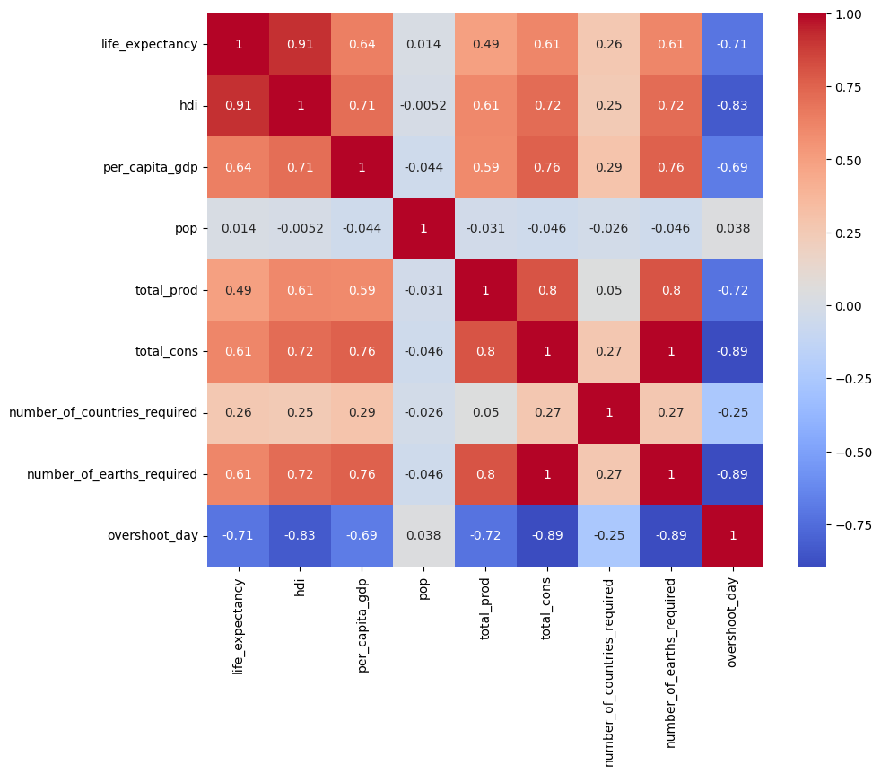

import pandas as pd
import statsmodels.formula.api as smf
# Lire le fichier CSV
dta = pd.read_csv('/home/metienne/git/TopicsInStatistics/data/overshootday_overview.csv')
dta = dta.dropna()How the overshoot day is it linked to life expectancy, human dvp index, per_capita, population, production and consumption ?
# Summary for numerical variables
print(dta.describe()) life_expectancy hdi per_capita_gdp pop total_prod \
count 167.000000 167.000000 167.000000 167.000000 167.000000
mean 72.531798 0.722108 14134.070787 44.491325 3.056235
std 7.484902 0.150773 19763.533118 158.168844 2.615103
min 52.805000 0.391000 210.804080 0.096286 0.300103
25% 67.475500 0.599000 1779.638788 3.060985 1.253923
50% 74.131000 0.746000 5471.835506 9.630960 1.985990
75% 77.617700 0.839000 16194.654522 31.758650 4.240380
max 84.211000 0.956000 111380.649478 1459.380000 12.055943
total_cons number_of_countries_required number_of_earths_required \
count 167.000000 167.000000 167.000000
mean 3.227056 3.702138 2.039055
std 2.308365 8.888881 1.458568
min 0.508542 0.038129 0.321328
25% 1.542461 0.893073 0.974622
50% 2.422773 1.829049 1.530858
75% 4.486365 3.018712 2.834764
max 14.270954 104.616270 9.017275
overshoot_day
count 167.000000
mean 235.041916
std 110.559658
min 40.000000
25% 128.000000
50% 238.000000
75% 365.000000
max 365.000000
region
Africa 46
Asia-Pacific 28
EU 27
Middle East/Central Asia 23
Central America/Caribbean 17
Other Europe 12
South America 11
North America 3
Name: count, dtype: int64
income_group
HI 47
UM 44
LM 44
LI 32
Name: count, dtype: int64
# Summary for cetegorical variables
print(dta['region'].value_counts())
print(dta['income_group'].value_counts())region
Africa 46
Asia-Pacific 28
EU 27
Middle East/Central Asia 23
Central America/Caribbean 17
Other Europe 12
South America 11
North America 3
Name: count, dtype: int64
income_group
HI 47
UM 44
LM 44
LI 32
Name: count, dtype: int64import seaborn as sns
import matplotlib.pyplot as plt
# correlations
# numerical columns
numeric_columns = dta.select_dtypes(include=['float64', 'int64']).columns
# Calcul des corrélations uniquement sur les colonnes numériques
corr_matrix = dta[numeric_columns].corr()
# Affichage de la heatmap des corrélations
plt.figure(figsize=(10,8))
sns.heatmap(corr_matrix, annot=True, cmap='coolwarm')
plt.show()
Does this reation change according to the world region ?
m1 = smf.ols(formula='overshoot_day ~ life_expectancy + hdi + per_capita_gdp + pop + total_prod + total_cons ', data=dta)
# model ajust
results_m1 = m1.fit()
# Affichage des résultats de la régression
print(results_m1.summary()) OLS Regression Results
==============================================================================
Dep. Variable: overshoot_day R-squared: 0.888
Model: OLS Adj. R-squared: 0.884
Method: Least Squares F-statistic: 212.2
Date: Sun, 15 Sep 2024 Prob (F-statistic): 1.76e-73
Time: 22:49:17 Log-Likelihood: -839.22
No. Observations: 167 AIC: 1692.
Df Residuals: 160 BIC: 1714.
Df Model: 6
Covariance Type: nonrobust
===================================================================================
coef std err t P>|t| [0.025 0.975]
-----------------------------------------------------------------------------------
Intercept 476.3372 42.542 11.197 0.000 392.322 560.353
life_expectancy 2.2914 0.992 2.309 0.022 0.332 4.251
hdi -436.3195 56.374 -7.740 0.000 -547.652 -324.987
per_capita_gdp 0.0008 0.000 3.271 0.001 0.000 0.001
pop 0.0028 0.019 0.150 0.881 -0.034 0.039
total_prod 0.5293 1.887 0.280 0.780 -3.198 4.257
total_cons -32.6661 2.698 -12.105 0.000 -37.995 -27.337
==============================================================================
Omnibus: 27.181 Durbin-Watson: 0.985
Prob(Omnibus): 0.000 Jarque-Bera (JB): 39.308
Skew: 0.902 Prob(JB): 2.91e-09
Kurtosis: 4.547 Cond. No. 5.25e+05
==============================================================================
Notes:
[1] Standard Errors assume that the covariance matrix of the errors is correctly specified.
[2] The condition number is large, 5.25e+05. This might indicate that there are
strong multicollinearity or other numerical problems.from statsmodels.stats.anova import anova_lm
m2 = smf.ols(formula='overshoot_day ~ life_expectancy + hdi + per_capita_gdp + total_cons ', data=dta)
results_m2 = m2.fit()m1 = smf.ols(formula='overshoot_day ~ life_expectancy + hdi + per_capita_gdp + pop + total_prod + total_cons ', data=dta)
# model ajust
results_m1 = m1.fit()
m2 = smf.ols(formula='overshoot_day ~ life_expectancy + hdi + per_capita_gdp + total_cons ', data=dta)
results_m2 = m2.fit()
## compare m1 and m2
anova_results = anova_lm(results_m2, results_m1)
print(anova_results) df_resid ssr df_diff ss_diff F Pr(>F)
0 162.0 226676.176959 0.0 NaN NaN NaN
1 160.0 226532.705100 2.0 143.47186 0.050667 0.95061print(results_m2.summary()) OLS Regression Results
==============================================================================
Dep. Variable: overshoot_day R-squared: 0.888
Model: OLS Adj. R-squared: 0.886
Method: Least Squares F-statistic: 322.0
Date: Sun, 15 Sep 2024 Prob (F-statistic): 5.75e-76
Time: 22:55:18 Log-Likelihood: -839.27
No. Observations: 167 AIC: 1689.
Df Residuals: 162 BIC: 1704.
Df Model: 4
Covariance Type: nonrobust
===================================================================================
coef std err t P>|t| [0.025 0.975]
-----------------------------------------------------------------------------------
Intercept 476.8718 42.177 11.306 0.000 393.583 560.160
life_expectancy 2.2697 0.980 2.317 0.022 0.335 4.204
hdi -434.4145 55.536 -7.822 0.000 -544.082 -324.747
per_capita_gdp 0.0008 0.000 3.277 0.001 0.000 0.001
total_cons -32.2095 2.110 -15.262 0.000 -36.377 -28.042
==============================================================================
Omnibus: 26.859 Durbin-Watson: 0.983
Prob(Omnibus): 0.000 Jarque-Bera (JB): 38.476
Skew: 0.898 Prob(JB): 4.42e-09
Kurtosis: 4.518 Cond. No. 5.21e+05
==============================================================================
Notes:
[1] Standard Errors assume that the covariance matrix of the errors is correctly specified.
[2] The condition number is large, 5.21e+05. This might indicate that there are
strong multicollinearity or other numerical problems.# Getting the covariance matrix of the parameter estimates
cov_matrix = results_m1.cov_params()
print(cov_matrix) Intercept life_expectancy hdi per_capita_gdp \
Intercept 1809.795372 -38.053115 1307.662264 2.399071e-03
life_expectancy -38.053115 0.984492 -47.442516 -1.224311e-05
hdi 1307.662264 -47.442516 3177.984385 -2.098635e-03
per_capita_gdp 0.002399 -0.000012 -0.002099 5.922858e-08
pop 0.028414 -0.000912 0.023378 1.128577e-07
total_prod -5.144821 0.195591 -14.080334 2.688437e-05
total_cons -1.542778 0.161323 -27.815941 -2.850716e-04
pop total_prod total_cons
Intercept 2.841366e-02 -5.144821 -1.542778
life_expectancy -9.124414e-04 0.195591 0.161323
hdi 2.337776e-02 -14.080334 -27.815941
per_capita_gdp 1.128577e-07 0.000027 -0.000285
pop 3.432641e-04 -0.000096 0.001336
total_prod -9.620714e-05 3.562455 -3.141453
total_cons 1.336426e-03 -3.141453 7.281748 m3 = smf.ols(formula='overshoot_day ~ income_group + life_expectancy + hdi + per_capita_gdp + total_cons + income_group:life_expectancy + income_group:hdi + income_group:per_capita_gdp + income_group:total_cons', data=dta)
results_m3 = m3.fit()
print(results_m3.summary()) OLS Regression Results
==============================================================================
Dep. Variable: overshoot_day R-squared: 0.957
Model: OLS Adj. R-squared: 0.952
Method: Least Squares F-statistic: 172.6
Date: Sun, 15 Sep 2024 Prob (F-statistic): 2.17e-90
Time: 23:01:31 Log-Likelihood: -759.34
No. Observations: 167 AIC: 1559.
Df Residuals: 147 BIC: 1621.
Df Model: 19
Covariance Type: nonrobust
======================================================================================================
coef std err t P>|t| [0.025 0.975]
------------------------------------------------------------------------------------------------------
Intercept 475.5719 76.750 6.196 0.000 323.896 627.248
income_group[T.LI] -82.5973 104.243 -0.792 0.429 -288.605 123.411
income_group[T.LM] -26.6372 89.044 -0.299 0.765 -202.609 149.335
income_group[T.UM] -60.8450 117.021 -0.520 0.604 -292.106 170.416
life_expectancy -0.0580 1.816 -0.032 0.975 -3.647 3.531
income_group[T.LI]:life_expectancy -0.6213 2.393 -0.260 0.796 -5.351 4.109
income_group[T.LM]:life_expectancy 0.1047 2.069 0.051 0.960 -3.985 4.194
income_group[T.UM]:life_expectancy 2.5267 2.334 1.082 0.281 -2.086 7.140
hdi -334.8283 128.881 -2.598 0.010 -589.527 -80.130
income_group[T.LI]:hdi 416.3604 172.789 2.410 0.017 74.890 757.831
income_group[T.LM]:hdi 294.6598 152.695 1.930 0.056 -7.101 596.421
income_group[T.UM]:hdi 32.9497 196.861 0.167 0.867 -356.095 421.994
per_capita_gdp 0.0006 0.000 2.633 0.009 0.000 0.001
income_group[T.LI]:per_capita_gdp -0.0116 0.018 -0.640 0.523 -0.047 0.024
income_group[T.LM]:per_capita_gdp -0.0058 0.004 -1.622 0.107 -0.013 0.001
income_group[T.UM]:per_capita_gdp -0.0006 0.002 -0.410 0.683 -0.004 0.002
total_cons -15.2504 1.885 -8.092 0.000 -18.975 -11.526
income_group[T.LI]:total_cons -2.8151 15.266 -0.184 0.854 -32.985 27.355
income_group[T.LM]:total_cons -40.0300 4.097 -9.770 0.000 -48.127 -31.933
income_group[T.UM]:total_cons -33.7400 3.693 -9.137 0.000 -41.037 -26.443
==============================================================================
Omnibus: 15.235 Durbin-Watson: 1.513
Prob(Omnibus): 0.000 Jarque-Bera (JB): 20.237
Skew: 0.567 Prob(JB): 4.03e-05
Kurtosis: 4.273 Cond. No. 3.61e+06
==============================================================================
Notes:
[1] Standard Errors assume that the covariance matrix of the errors is correctly specified.
[2] The condition number is large, 3.61e+06. This might indicate that there are
strong multicollinearity or other numerical problems.m4 = smf.ols(formula='overshoot_day ~ income_group + life_expectancy + hdi + per_capita_gdp + total_cons + income_group:hdi + income_group:total_cons', data=dta)
results_m4 = m4.fit()
anova_results = anova_lm(results_m4, results_m3)
print(anova_results)
print(results_m4.summary()) df_resid ssr df_diff ss_diff F Pr(>F)
0 153.0 90805.946608 0.0 NaN NaN NaN
1 147.0 87032.348502 6.0 3773.598106 1.062285 0.387932
OLS Regression Results
==============================================================================
Dep. Variable: overshoot_day R-squared: 0.955
Model: OLS Adj. R-squared: 0.951
Method: Least Squares F-statistic: 251.2
Date: Sun, 15 Sep 2024 Prob (F-statistic): 4.78e-96
Time: 23:06:15 Log-Likelihood: -762.89
No. Observations: 167 AIC: 1554.
Df Residuals: 153 BIC: 1597.
Df Model: 13
Covariance Type: nonrobust
=================================================================================================
coef std err t P>|t| [0.025 0.975]
-------------------------------------------------------------------------------------------------
Intercept 449.4824 61.112 7.355 0.000 328.749 570.216
income_group[T.LI] -87.4938 67.903 -1.289 0.200 -221.643 46.655
income_group[T.LM] -2.3332 65.644 -0.036 0.972 -132.018 127.352
income_group[T.UM] 50.9642 86.889 0.587 0.558 -120.692 222.621
life_expectancy 0.6123 0.661 0.926 0.356 -0.693 1.918
hdi -364.7203 80.702 -4.519 0.000 -524.154 -205.287
income_group[T.LI]:hdi 336.1997 90.462 3.716 0.000 157.483 514.916
income_group[T.LM]:hdi 247.6362 84.096 2.945 0.004 81.497 413.775
income_group[T.UM]:hdi 130.0903 109.889 1.184 0.238 -87.005 347.185
per_capita_gdp 0.0006 0.000 2.442 0.016 0.000 0.001
total_cons -15.0522 1.882 -7.999 0.000 -18.770 -11.335
income_group[T.LI]:total_cons -6.9814 13.057 -0.535 0.594 -32.777 18.814
income_group[T.LM]:total_cons -42.3619 3.798 -11.154 0.000 -49.865 -34.859
income_group[T.UM]:total_cons -35.1038 3.621 -9.693 0.000 -42.258 -27.949
==============================================================================
Omnibus: 24.387 Durbin-Watson: 1.492
Prob(Omnibus): 0.000 Jarque-Bera (JB): 40.838
Skew: 0.745 Prob(JB): 1.36e-09
Kurtosis: 4.911 Cond. No. 2.48e+06
==============================================================================
Notes:
[1] Standard Errors assume that the covariance matrix of the errors is correctly specified.
[2] The condition number is large, 2.48e+06. This might indicate that there are
strong multicollinearity or other numerical problems.